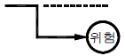
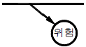
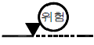
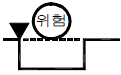
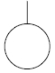
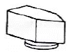
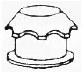
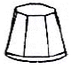
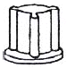

산업안전산업기사 (2014-03-02 기출문제)
1과목: 산업안전관리론
1. 버드(Bird)는 사고가 5개의 연쇄반응에 의하여 발생되는 것으로 보았다. 다음 중 재해 발생의 첫 단계에 해당하는 것은?
- 개인적 결함
- 사회적 환경
- 전문적 관리의 부족
- 불안전한 행동 및 불안전한 상태
(정답률: 50%)

2. 무재해운동의 추진에 있어 무재해운동을 개시한 날로부터 며칠 이내에 무재해 운동 개시신청서를 관련 기관에 제출하여야 하는가?(관련 규정 개정전 문제로 여기서는 기존 정답인 3번을 누르면 정답 처리됩니다. 자세한 내용은 해설을 참고하세요.)
- 4일
- 7일
- 14일
- 30일
(정답률: 85%)
3. 다음 중 부주의 현상을 그림으로 표시한 것으로 의식의 우회를 나타낸 것은?
- 의식의 흐름

- 의식의 흐름

- 의식의 흐름

- 의식의 흐름

(정답률: 69%)
4. 산업안전보건법령에 따라 건설현장에서 사용하는 크레인, 리프트 및 곤돌라는 최초로 설치한 날부터 얼마마다 안전검사를 실시하여야 하는가?
- 6개월
- 1년
- 2년
- 3년
(정답률: 77%)
5. 재해손실비 중 직접 손실비에 해당하지 않는 것은?
- 요양급여
- 휴업급여
- 간병급여
- 생산손실급여
(정답률: 78%)
6. 산업안전보건법령상 안전⋅보건표지의 종류에 있어 “안전모 착용”은 어떤 표지에 해당하는가?
- 경고 표지
- 지시 표지
- 안내 표지
- 관계자외출입금지
(정답률: 91%)
7. 어떤 사업장의 종합재해지수가 16.95이고, 도수율이 20.83 이라면 강도율은 약 얼마인가?
- 20.45
- 15.92
- 13.79
- 10.54
(정답률: 62%)
8. 인간관계 메커니즘 중에서 다른 사람으로부터의 판단이나 행동을 무비판적으로 논리적, 사실적 근거 없이 받아들이는 것을 무엇이라 하는가?
- 모방(imitation)
- 암시(suggestion)
- 투사(projection)
- 동일화(identification)
(정답률: 65%)
9. 다음 중 산업안전보건법령에서 정한 안전보건관리규정의 세부내용으로 가장 적절하지 않은 것은?
- 산업안전보건위원회의 설치⋅운영에 관한 사항
- 사업주 및 근로자의 재해 예방 책임 및 의무 등에 관한 사항
- 근로자 건강진단, 작업환경측정의 실시 및 조치절차 등에 관한 사항
- 산업재해 및 중대산업사고의 발생시 손실비용 산정 및 보상에 관한 사항
(정답률: 63%)
10. 다음 중 교육훈련의 학습을 극대화시키고, 개인의 능력 개발을 극대화시켜 주는 평가방법이 아닌 것은?
- 관찰법
- 배제법
- 자료분석법
- 상호평가법
(정답률: 79%)
11. 다음 중 안전심리의 5대 요소에 해당하는 것은?
- 기질(temper)
- 지능(intelligence)
- 감각(sense)
- 환경(environment)
(정답률: 70%)
12. 다음 중 시행착오설에 의한 학습법칙에 해당하지 않는 것은?
- 효과의 법칙
- 준비성의 법칙
- 연습의 법칙
- 일관성의 법칙
(정답률: 67%)
13. 다음 중 재해조사시의 유의사항으로 가장 적절하지 않은 것은?
- 사실을 수집한다.
- 사람, 기계설비, 양면의 재해요인을 모두 도출한다.
- 객관적인 입장에서 공정하게 조사하며, 조사는 2인 이상이 한다.
- 목격자의 증언과 추측의 말을 모두 반영하여 분석하고, 결과를 도출한다.
(정답률: 85%)
14. 산업안전보건법령상 특별안전⋅보건교육에 있어 대상작업별 교육내용 중 밀폐공간에서의 작업에 대한 교육내용과 가장 거리가 먼 것은? (단, 기타 안전⋅보건관리에 필요한 사항은 제외한다.)
- 산소농도측정 및 작업환경에 관한 사항
- 유해물질의 인체에 미치는 영향
- 보호구 착용 및 사용방법에 관한 사항
- 사고시의 응급처치 및 비상시 구출에 관한 사항
(정답률: 81%)
15. 다음 중 안전대의 각 부품(용어)에 관한 설명으로 틀린 것은?
- “안전그네”란 신체지지의 목적으로 전신에 착용하는 띠 모양의 것으로서 상체 등 신체 일부분만 지지하는 것은 제외한다.
- “버클”이란 벨트 또는 안전그네와 신축조절기를 연결하기 위한 사각형의 금속 고리를 말한다.
- “U자걸이”란 안전대의 죔줄을 구조물 등에 U자 모양으로 돌린 뒤 훅 또는 카라비너를 D링에, 신축조절기를 각링 등에 연결하는 걸이 방법을 말한다.
- “1개걸이”란 죔줄의 한쪽 끝을 D링에 고정시키고 훅 또는 카라비너를 구조물 또는 구명줄에 고정시키는 걸이 방법을 말한다.
(정답률: 54%)
16. 다음 중 무재해운동 추진기법에 있어 지적확인의 특성을 가장 적절하게 설명한 것은?
- 오관의 감각기관을 총동원하여 작업의 정확성과 안전을 확인한다.
- 참여자 전원의 스킨십을 통하여 연대감, 일체감을 조성할 수 있고 느낌을 교류한다.
- 비평을 금지하고, 자유로운 토론을 통하여 독창적인 아이디어를 끌어낼 수 있다.
- 작업 전 5분간의 미팅을 통하여 시나리오상의 역할을 연기하여 체험하는 것을 목적으로 한다.
(정답률: 79%)
17. 다음 중 학습의 목적의 3요소에 해당하지 않는 것은?
- 주제
- 대상
- 목표
- 학습정도
(정답률: 50%)
18. 다음 중 매슬로우의 욕구 5단계 이론에서 최종 단계에 해당하는 것은?
- 존경의 욕구
- 성장의 욕구
- 자아실현 욕구
- 생리적 욕구
(정답률: 89%)
19. 다음 중 안전교육의 3단계에서 생활지도, 작업동작지도 등을 통한 안전의 습관화를 위한 교육을 무엇이라 하는가?
- 지식교육
- 기능교육
- 태도교육
- 인성교육
(정답률: 85%)
20. 다음 중 헤드십에 관한 내용으로 볼 수 없는 것은?
- 부하와의 사회적 간격이 좁다.
- 지휘의 형태는 권위주의적이다.
- 권한의 부여는 조직으로부터 위임받는다.
- 권한에 대한 근거는 법적 또는 규정에 의한다.
(정답률: 79%)
2과목: 인간공학 및 시스템안전공학
21. 다음 중 음(音)의 크기를 나타내는 단위로만 나열된 것은?
- dB, nit
- phon, lb
- dB, psi
- phon, dB
(정답률: 85%)
22. 다음 중 결함수분석법(FTA)에 관한 설명으로 틀린 것은?
- 최초 Watson이 군용으로 고안하였다.
- 미니멀 패스(Minimal path sets)를 구하기 위해서는 미니멀 컷(Minimal Cut sets)의 상대성을 이용한다.
- 정상사상의 발생확률을 구한 다음 FT를 작성한다.
- AND 게이트의 확률 계산은 각 입력사상의 곱으로 한다.
(정답률: 62%)
23. 다음 통제용 조종장치의 형태 중 그 성격이 다른 것은?
- 노브(knob)
- 푸시 버튼(push button)
- 토글 스위치(toggle switch)
- 로터리선택스위치(rotary select switch)
(정답률: 71%)
24. 다음 중 공간 배치의 원칙에 해당되지 않는 것은?
- 중요성의 기능
- 다양성의 원칙
- 기능별 배치의 원칙
- 사용빈도의 원칙
(정답률: 83%)
25. 다음 중 위험 및 운전성 분석(HAZOP) 수행에 가장 좋은 시점은 어느 단계인가?
- 구상단계
- 생산단계
- 설치단계
- 개발단계
(정답률: 50%)
26. 1cd의 점광원에서 1m 떨어진 곳에서의 조도가 3lux 이었다. 동일한 조건에서 5m 떨어진 곳에서의 조도는 약 몇 lux 인가?
- 0.12
- 0.22
- 0.36
- 0.56
(정답률: 57%)
27. 다음 중 신체와 환경간의 열교환 과정을 가장 올바르게 나타낸 식은?(단, W는 일, M은 대사, S는 열 축적, R은 복사, C는 대류, E는 증발, Clo는 의복의 단열률이다.)
- W = (M + S) ± R ± C - E
- S = (M - W) ± R ± C - E
- W = Clo × (M - S) ± R ± C - E
- S = Clo × (M - W) ± R ± C - E
(정답률: 52%)
28. 다음 중 위험을 통제하는데 있어 취해야 할 첫 단계 조사는?
- 작업원을 선발하여 훈련한다.
- 덮개나 격리 등으로 위험을 방호한다.
- 설계 및 공정계획시에 위험을 제거토록 한다.
- 점검과 필요한 안전보호구를 사용하도록 한다.
(정답률: 60%)
29. FT도에서 사용되는 다음 기호의 의미로 옳은 것은?

- 결함사상
- 기본사상
- 통상사상
- 제외사상
(정답률: 86%)
30. System 요소 간의 link 중 인간 커뮤니케이션 Link에 해당되지 않는 것은?
- 방향성 Link
- 통신계 Link
- 시각 Link
- 컨트롤 Link
(정답률: 59%)
31. 다음 중 일반적인 수공구의 설계원칙으로 볼 수 없는 것은?
- 손목을 곧게 유지한다.
- 반복적인 손가락 동작을 피한다.
- 사용이 용이한 검지만을 주로 사용한다.
- 손잡이는 접촉면적을 가능하면 크게 한다.
(정답률: 85%)
32. 인간 오류의 분류에 있어 원인에 의한 분류 중 작업자가 기능을 움직이려 해도 필요한 물건, 정보, 에너지 등의 공급이 없는 것처럼 작업자가 움직이려 해도 움직일 수 없어서 발생하는 오류는?
- primary error
- secondary error
- command error
- omission error
(정답률: 56%)
33. 다음 중 신호의 강도, 진동수에 의한 신호의 상대 식별 등 물리적 자극의 변화여부를 감지할 수 있는 최소의 자극 범위를 의미하는 것은?
- Chunking
- Stimulus Range
- SDT(Signal Detection Theory)
- JND(Just Noticeable Difference)
(정답률: 56%)
34. 조도가 400럭스인 위치에 놓인 흰색 종이 위에 짙은 회색의 글자가 씌어져 있다. 종이의 반사율 80%이고, 글자의 반사율은 40%라 할 때 종이와 글자의 대비는 얼마인가?
- -100%
- -50%
- 50%
- 100%
(정답률: 67%)
35. 다음 중 인간-기계 시스템에서 기계에 비교한 인간의 장점과 가장 거리가 먼 것은?
- 완전히 새로운 해결책을 찾아낸다.
- 여러 개의 프로그램된 활동을 동시에 수행한다.
- 다양한 경험을 토대로 하여 의사결정을 한다.
- 상황에 따라 변화하는 복잡한 자극 형태를 식별한다.
(정답률: 85%)
36. 성인이 하루에 섭취하는 음식물의 열량 중 일부는 생명을 유지하기 위한 신체기능에 소비되고, 나머지는 일을 한다거나 여가를 즐기는데 사용될 수 있다. 이 중 생명을 유지하기 위한 최소한의 대사량을 무엇이라 하는가?
- BMR
- RMR
- GSR
- EMG
(정답률: 63%)
37. Chapanis의 위험분석에서 발생이 불가능한(Impossible) 경우의 위험발생률은?
- 10-2/day
- 10-4/day
- 10-6/day
- 10-8/day
(정답률: 64%)
38. 세발자전거에서 각 바퀴의 신뢰도가 0.9일 때 이 자전거의 신뢰도는 얼마인가?
- 0.729
- 0.810
- 0.891
- 0.999
(정답률: 55%)
39. 다음 중 형상 암호화된 조종장치에서 “이산 멈춤 위치용” 조종장치로 가장 적절한 것은?




(정답률: 75%)
40. 다음 중 보전용 자재에 관한 설명으로 가장 적절하지 않은 것은?
- 소비속도가 느려 순환사용이 불가능하므로 폐기시켜야 한다.
- 휴지손실이 적은 자재는 원자재나 부품의 형태로 재고를 유지한다.
- 열화상태를 경향검사로 예측이 가능한 품목은 적시 발주법을 적용한다.
- 보전의 기술수준, 관리수준이 재고량을 좌우한다.
(정답률: 77%)
3과목: 기계위험방지기술
41. 선반에서 절삭가공 중 발생하는 연속적인 칩을 자동적으로 끊어 주는 역할을 하는 것은?
- 커버
- 방진구
- 보안경
- 칩 브레이커
(정답률: 88%)
42. 다음 중 연삭기를 이용한 작업을 할 경우 연삭숫돌을 교체한 후에는 얼마 동안 시험운전을 하여야 하는가?
- 1분 이상
- 3분 이상
- 10분 이상
- 15분 이상
(정답률: 84%)
43. 다음 중 와이어로프 구성기호 “6×19"의 표기에서 "6" 의 의미에 해당하는 것은?
- 소선 수
- 소선의 직경(mm)
- 스트랜드 수
- 로프의 인장강도
(정답률: 55%)
44. 다음 중 산업안전보건법령상 안전난간의 구조 및 설치 요건에서 상부난간대의 높이는 바닥면으로부터 얼마지점에 설치하여야 하는가?
- 30cm 이상
- 60cm 이상
- 90cm 이상
- 120cm 이상
(정답률: 63%)
45. 기계의 안전조건 중 외형의 안전화로 가장 적합한 것은?
- 기계의 회전부에 덮개를 설치하였다.
- 강도의 열화를 고려해 안전율을 최대로 설계하였다.
- 정전시 오동작을 방지하기 위하여 자동제어장치를 설치하였다.
- 사용압력 변동시의 오동작 방지를 위하여 자동제어 장치를 설치하였다.
(정답률: 81%)
46. 드릴로 구멍을 뚫는 작업 중 공작물이 드릴과 함께 회전할 우려가 가장 큰 경우는?
- 처음 구멍을 뚫을 때
- 중간쯤 뚫렸을 때
- 거의 구멍이 뚫렸을 때
- 구멍이 완전히 뚫렸을 때
(정답률: 64%)
47. 다음 중 톱의 후면날 가까이에 설치되어 목재의 켜진틈 사이에 끼어서 쐐기작용을 하여 목재가 압박을 가하지 않도록 하는 장치를 무엇이라 하는가?
- 분할날
- 반발방지장치
- 날접촉예방장치
- 가동식 접촉예방장치
(정답률: 50%)
48. 다음 중 원심기의 방호장치로 가장 적합한 것은?
- 덮개
- 반발방지장치
- 릴리프밸브
- 수인식 가드
(정답률: 78%)
49. 다음 중 기계설비 안전화의 기본 개념으로서 적절하지 않은 것은?
- fail-safe의 기능을 갖추도록 한다.
- fool proof의 기능을 갖추도록 한다.
- 안전상 필요한 장치는 단일 구조로 한다.
- 안전 기능은 기계 장치에 내장되도록 한다.
(정답률: 73%)
50. 다음 중 산업안전보건법령상 이동식 크레인을 사용하여 작업할 때의 작업시작 전 점검사항으로 틀린 것은?
- 브레이크⋅클러치 및 조정장치의 기능
- 권과방지장치나 그 밖의 경보장치의 기능
- 와이어로프가 통하고 있는 곳 및 작업장소의 지반상태
- 원동기⋅회전축⋅기어 및 풀리 등의 덮개 또는 울 등의 이상 유무
(정답률: 55%)
51. 다음 중 산업안전보건법령에 따른 압력용기에 설치하는 안전밸브의 설치 및 작동에 관한 설명으로 틀린 것은?
- 다단형 압축기에는 각 단 또는 각 공기압축기별로 안전밸브 등을 설치하여야 한다.
- 안전밸브는 이를 통하여 보호하려는 설비의 최저사용압력 이하에서 작동되도록 설정하여야 한다.
- 화학공정 유체와 안전밸브의 디스크 또는 시트가 직접 접촉될 수 있도록 설치된 경우에는 매년 1회 이상 국가 교정기관에서 검사한 후 납으로 봉인하여 사용한다.
- 공정안전보고서 이행상태 평가결과가 우수한 사업장의 안전밸브의 경우 검사주기는 4년마다 1회 이상이다.
(정답률: 69%)
52. 클러치 프레스에 부착된 양수조작식 방호장치에 있어서 클러치 맞물림 개소수가 4군데, 매분 행정수가 300SPM일 때 양수조작식 조작부의 최소 안전거리는? (단, 인간의 손의 기준 속도는 1.6m/s로 한다.)
- 240 mm
- 260 mm
- 340 mm
- 360 mm
(정답률: 48%)
53. 다음 중 벨트 컨베이어의 특징에 해당되지 않는 것은?
- 무인화 작업이 가능하다.
- 연속적으로 물건을 운반할 수 있다.
- 운반과 동시에 하역작업이 가능하다.
- 경사각이 클수록 물건을 쉽게 운반할 수 있다.
(정답률: 79%)
54. 프레스의 광전자식 방호장치에서 손이 광선을 차단한 직후부터 급정지장치가 작동을 개시한 시간이 0.03초이고, 급정지장치가 작동을 시작하여 슬라이드가 정지한 때까지의 시간이 0.2초라면 광축의 설치위치는 위험점에서 얼마 이상 유지해야 하는가?
- 153mm
- 279mm
- 368mm
- 451mm
(정답률: 56%)
55. 다음 중 슬로터(slotter)의 방호장치로 적합하지 않은 것은?
- 칩받이
- 방책
- 칸막이
- 인발블록
(정답률: 62%)
56. 원래 길이가 150mm인 슬링체인을 점검한 결과 길이에 변형이 발생하였다. 다음 중 폐기대상에 해당되는 측정값(길이)으로 옳은 것은?
- 151.5 mm 초과
- 153.5 mm 초과
- 155.5 mm 초과
- 157.5 mm 초과
(정답률: 53%)
57. 다음 중 보일러의 부식원인과 가장 거리가 먼 것은?
- 증기발생이 과다할 때
- 급수처리를 하지 않은 물을 사용할 때
- 급수에 해로운 불순물이 혼입되었을 때
- 불순물을 사용하여 수관이 부식되었을 때
(정답률: 69%)
58. 산업안전보건법령상 가스집합장치로부터 얼마 이내의 장소에서는 흡연, 화기의 사용 또는 불꽃을 발생할 우려가 있는 행위를 금지하여야 하는가?
- 5m
- 7m
- 10m
- 25m
(정답률: 55%)
59. 다음 중 선반의 안전장치로 볼 수 없는 것은?
- 울
- 급정지브레이크
- 안전블럭
- 칩비산방지 투명판
(정답률: 60%)
60. 다음 중 지게차 헤드가드에 관한 설명으로 틀린 것은?(관련 규정 개정전 문제로 여기서는 기존 정답인 2번을 누르면 정답 처리됩니다. 자세한 내용은 해설을 참고하세요.)
- 상부틀의 각 개구의 폭 또는 길이가 16cm 미만일 것
- 강도는 지게차 최대하중의 등분포정하중에 견딜 것
- 운전자가 서서 조작하는 방식의 지게차의 경우에는 운전석의 바닥면에서 헤드가의 상부틀 하면까지의 높이가 2m 이상일 것
- 운전자가 앉아서 조작하는 방식의 지게차의 경우에는 운전자의 좌석 윗면에서 헤드가드의 상부틀 아랫면까지의 높이가 1m 이상일 것
(정답률: 77%)
4과목: 전기 및 화학설비위험방지기술
61. 다음 중 인체접촉상태에 따른 허용접촉전압과 해당 종별의 연결이 틀린 것은?
- 2.5V 이하 - 제1종
- 25V 이하 - 제2종
- 50V 이하 - 제3종
- 100V 이하 - 제4종
(정답률: 71%)
62. 다음 중 내압 방폭구조인 전기기기의 성능시험에 관한 설명으로 틀린 것은?
- 성능시험은 모든 내용물이 용기에 장착한 상태로 시험한다.
- 성능시험은 충격시험을 실시한 시료 중 하나를 사용해서 실시한다.
- 부품의 일부가 용기에 포함되지 않은 상태에서 사용할 수 있도록 설계된 경우, 최적의 조건에서 시험을 실시해야 한다.
- 제조자가 제시한 자세한 부품 배열방법이 있고, 빈 용기가 최악의 폭발압력을 발생시키는 조건인 경우에는 빈 용기 상태로 시험을 할 수 있다.
(정답률: 52%)
63. 다음 중 사업장의 정전기 발생에 대한 재해방지 대책으로 적합하지 못한 것은?
- 습도를 높인다.
- 실내 온도를 높인다.
- 도체부분에 접지를 실시한다.
- 적절한 도전성 재료를 사용한다.
(정답률: 68%)
64. 다음 중 교류 아크 용접기에서 자동전격방지장치의 기능으로 틀린 것은?
- 감전위험방지
- 전력손실 감소
- 정전기 위험방지
- 무부하시 안전전압 이하로 저하
(정답률: 43%)
65. 옥내배선 중 누전으로 인한 화재방지를 위해 별도로 실시할 필요가 없는 것은?
- 배선불량시 재시공 할 것
- 배선로 상에 단로기를 설치할 것
- 정기적으로 절연저항을 측정할 것
- 정기적으로 배선시공 상태를 확인할 것
(정답률: 62%)
66. 다음 중 전기기기의 절연의 종류와 최고허용온도가 잘못 연결된 것은?
- Y : 90℃
- A : 1⑤℃
- B : 130℃
- F : 180℃
(정답률: 57%)
67. Dalziel의 심실세동전류와 통전시간과의 관계식에 의하면 인체 전격시의 통전시간이 4초이었다고 했을 때 심실세동전류의 크기는 약 몇 mA 인가?
- 42
- 83
- 165
- 185
(정답률: 50%)
68. 다음 중 전기화재의 직접적인 원인이 아닌 것은?
- 절연 열화
- 애자의 기계적 강도 저하
- 과전류에 의한 단락
- 접촉 불량에 의한 과열
(정답률: 74%)
69. 다음 중 방폭전기기기의 선정시 고려하여야 할 사항과 가장 거리가 먼 것은?
- 압력 방폭구조의 경우 최고표면온도
- 내압 방폭구조의 경우 최대안전틈새
- 안전증 방폭구조의 경우 최대안전틈새
- 본질안전 방폭구조의 경우 최소점화전류
(정답률: 50%)
70. 페인트를 스프레이로 뿌려 도장작업을 하는 작업 중 발생할 수 있는 정전기 대전으로만 이루어진 것은?
- 분출대전, 충돌대전
- 충돌대전, 마찰대전
- 유동대전, 충돌대전
- 분출대전, 유동대전
(정답률: 75%)
71. 다음 중 전기화재시 부적합한 소화기는?
- 분말 소화기
- CO2 소화기
- 할론 소화기
- 산알칼리 소화기
(정답률: 59%)
72. 전기설비로 인한 화재폭발의 위험분위기를 생성하지 않도록 하기 위해 필요한 대책으로 가장 거리가 먼 것은?
- 폭발성 가스의 사용 방지
- 폭발성 분진의 생성 방지
- 폭발성 가스의 체류 방지
- 폭발성 가스 누설 및 방출 방지
(정답률: 62%)
73. 다음 중 위험물에 대한 일반적 개념으로 옳지 않은 것은?
- 반응속도가 급격히 진행된다.
- 화학적 구조 및 결합력이 불안정하다.
- 대부분 화학적 구조가 복잡한 고분자 물질이다.
- 그 자체가 위험하다든가 또는 환경 조건에 따라 쉽게 위험성을 나타내는 물질을 말한다.
(정답률: 68%)
74. 아세틸렌(C2H2)의 공기 중의 완전연소 조성농도(Cst)는 약 얼마인가?
- 6.7vol%
- 7.0vol%
- 7.4vol%
- 7.7vol%
(정답률: 54%)
75. 가스용기 파열사고의 주요 원인으로 가장 거리가 먼 것은?
- 용기 밸브의 이탈
- 용기의 내압력 부족
- 용기 내압의 이상 상승
- 용기 내 폭발성 혼합가스 발화
(정답률: 49%)
76. 물질안전보건자료(MSDS)의 작성항목이 아닌 것은?
- 물리화학적 특성
- 유해물질의 제조법
- 환경에 미치는 영향
- 누출사고시 대처방법
(정답률: 73%)
77. 반응기를 조작방법에 따라 분류할 때 반응기의 한 쪽에서는 원료를 계속적으로 유입하는 동시에 다른 쪽에서는 반응생성물질을 유출시키는 형식의 반응기를 무엇이라 하는가?
- 관형 반응기
- 연속식 반응기
- 회분식 반응기
- 교반조형 반응기
(정답률: 57%)
78. 윤활유를 닦은 기름걸레를 햇빛이 잘 드는 작업장의 구석에 모아 두었을 때 가장 발생가능성이 높은 재해는?
- 분진폭발
- 자연발화에 의한 화재
- 정전기 불꽃에 의한 화재
- 기계의 마찰열에 의한 화재
(정답률: 76%)
79. 다음 중 “공기 중의 발화온도”가 가장 높은 물질은?
- CH4
- C2H2
- C2H6
- H2S
(정답률: 52%)
80. 공정안전보고서에 포함되어야 할 세부 내용 중 공정안전 자료에 해당하는 것은?
- 결함수분석(FTA)
- 도급업체 안전관리계획
- 각종 건물⋅설비의 배치도
- 비상조치계획에 따른 교육계획
(정답률: 67%)
5과목: 건설안전기술
81. 리프트(Lift)의 안전장치에 해당하지 않는 것은?
- 권과방지장치
- 비상정지장치
- 과부하방지장치
- 조속기
(정답률: 72%)
82. 벽체 콘크리트 타설시 거푸집이 터져서 콘크리트가 쏟아진 사고가 발생하였다. 다음 중 이 사고의 주요 원인으로 추정할 수 있는 것은?
- 콘크리트를 부어 넣는 속도가 빨랐다.
- 거푸집에 박리제를 다량 도포했다.
- 대기 온도가 매우 높았다.
- 시멘트 사용량이 많았다.
(정답률: 63%)
83. 산업안전보건기준에 관한 규칙에 따른 굴착면의 기울기 기준으로 옳지 않은 것은?(관련 규정 개정전 문제로 여기서는 기존 정답인 4번을 누르면 정답 처리됩니다. 자세한 내용은 해설을 참고하세요.)
- 경암 = 1 : 0.3
- 연암 = 1 : 0.5
- 풍화암 = 1 : 0.8
- 보통흙(건지) = 1 : 1.5 ~ 1 : 1.8
(정답률: 76%)
84. 비계발판의 크기를 결정하는 기준은?
- 비계의 제조회사
- 재료의 부식 및 손상정도
- 지점의 간격 및 작업시 하중
- 비계의 높이
(정답률: 61%)
85. 작업발판 및 통로의 끝이나 개구부로서 근로자가 추락 할 위험이 있는 장소에 설치하는 것과 거리가 먼 것은?
- 교차가새
- 안전난간
- 울타리
- 수직형 추락방망
(정답률: 66%)
86. 콘크리트를 타설할 때 거푸집에 작용하는 콘크리트 측압에 영향을 미치는 요인과 가장 거리가 먼 것은?
- 콘크리트 타설 속도
- 콘크리트 타설 높이
- 콘크리트의 강도
- 콘크리트 단위용적질량
(정답률: 61%)
87. 토사붕괴 재해의 발생 원인으로 보기 어려운 것은?
- 부석의 점검을 소홀히 했다.
- 지질조사를 충분히 하지 않았다.
- 굴착면 상하에서 동시작업을 했다.
- 안식각으로 굴착했다.
(정답률: 73%)
88. 추락에 의한 위험방지를 위해 조치해야 할 사항과 거리가 먼 것은?
- 추락방지망 설치
- 안전난간 설치
- 안전모 착용
- 투하설비 설치
(정답률: 79%)
89. 가설계단 및 계단참의 하중에 대한 지지력은 최소 얼마 이상이어야 하는가?
- 300 kg/m2
- 400 kg/m2
- 500 kg/m2
- 600 kg/m2
(정답률: 58%)
90. 강관비계 중 단관비계의 조립간격(벽체와의 연결간격)으로 옳은 것은?
- 수직방향 : 6m, 수평방향 : 8m
- 수직방향 : 5m, 수평방향 : 5m
- 수직방향 : 4m, 수평방향 : 6m
- 수직방향 : 8m, 수평방향 : 6m
(정답률: 46%)
91. 철골구조에서 강풍에 대한 내력이 설계에 고려되었는지 검토를 실시하지 않아도 되는 건물은?
- 높이 30m인 건물
- 연면적당 철골량이 45kg인 건물
- 단면구조가 일정한 구조물
- 이음부가 현장용접인 건물
(정답률: 59%)
92. 콘크리트의 재료분리현상 없이 거푸집 내부에 쉽게 타설 할 수 있는 정도를 나타내는 것은?
- Workability
- Bleeding
- Consistency
- Finishability
(정답률: 54%)
93. 굴착공사에서 굴착 깊이가 5m, 굴착 저면의 폭이 5m인 경우 양단면 굴착을 할 때 굴착부 상단면의 폭은? (단, 굴착면의 기울기는 1:1로 한다.)
- 10m
- 15m
- 20m
- 25m
(정답률: 64%)
94. 화물을 적재하는 경우에 준수하여야 하는 사항으로 옳지 않은 것은?
- 침하 우려가 없는 튼튼한 기반 위에 적재할 것
- 건물의 칸막이나 벽 등이 화물의 압력에 견딜 만큼의 강도를 지니지 아니한 경우에는 칸막이나 벽에 기대어 적재하지 않도록 할 것
- 불안정할 정도로 높이 쌓아 올리지 말 것
- 편하중이 발생하도록 쌓을 것
(정답률: 80%)
95. 거푸집의 일반적인 조립순서를 옳게 나열한 것은?
- 기둥 (→) 보받이 내력벽 (→) 큰보 (→) 작은보 (→) 바닥판 (→) 내벽 (→) 외벽
- 외벽 (→) 보받이 내력벽 (→) 큰보 (→) 작은보 (→) 바닥판 (→) 내력 (→) 기둥
- 기둥 (→) 보받이 내력벽 (→) 작은보 (→) 큰보 (→) 바닥판 (→) 내벽 (→) 외벽
- 기둥 (→) 보받이 내력벽 (→) 바닥판 (→) 큰보 (→) 작은보 (→) 내벽 (→) 외벽
(정답률: 62%)
96. 건설기계에 관한 설명 중 옳은 것은?
- 백호는 장비가 위치한 지면보다 높은 곳의 땅을 파는데에 적합하다.
- 바이브레이션 롤러는 노반 및 소일시멘트 등의 다지기에 사용된다.
- 파워쇼벨은 지면에 구멍을 뚫어 낙하해머 또는 디젤 해머에 의해 강관말뚝, 널말뚝 등을 박는데 이용된다.
- 가이데릭은 지면을 일정한 두께로 깍는 데에 이용된다.
(정답률: 51%)
97. 일반적으로 사면이 가장 위험한 경우는 어느 때인가?
- 사면이 완전 건조 상태일 때
- 사면의 수위가 서서히 상승할 때
- 사면이 완전 포화 상태일 때
- 사면의 수위가 급격히 하강할 때
(정답률: 63%)
98. 산업안전보건기준에 관한 규칙에 따른 작업장 근로자의 안전한 통행을 위하여 통로에 설치하여야 하는 조명 시설의 조도기준(Lux)는?
- 30 Lux 이상
- 75 Lux 이상
- 150 Lux 이상
- 300 Lux 이상
(정답률: 78%)
99. 정기안전점검 결과 건설공사의 물리적⋅기능적 결함 등이 발견되어 보수⋅보강 등의 조치를 하기 위하여 필요한 경우에 실시하는 것은?
- 자체안전점검
- 정밀안전점검
- 상시안전점검
- 품질관리점검
(정답률: 70%)
100. 건설작업용 리프트에 대하여 바람에 의한 붕괴를 방지하는 조치를 한다고 할 때 그 기준이 되는 최소 풍속은?
- 순간 풍속 30m/sec 초과
- 순간 풍속 35m/sec 초과
- 순간 풍속 40m/sec 초과
- 순간 풍속 45m/sec 초과
(정답률: 58%)
설명: 버드 사고는 전문적인 관리가 부족하여 발생한 것으로 보고되었다. 이는 적절한 안전 절차나 교육, 감독 등이 부족하여 사고가 발생하게 된 것이다. 따라서 이는 재해 발생의 첫 단계에 해당하는 것이다.